R - Probability
A probability is a number that describes the “magnitude of chance” associated with making a particular observation or statement.

It’s always a number between 0 and 1 (inclusive) and is often expressed as a fraction.
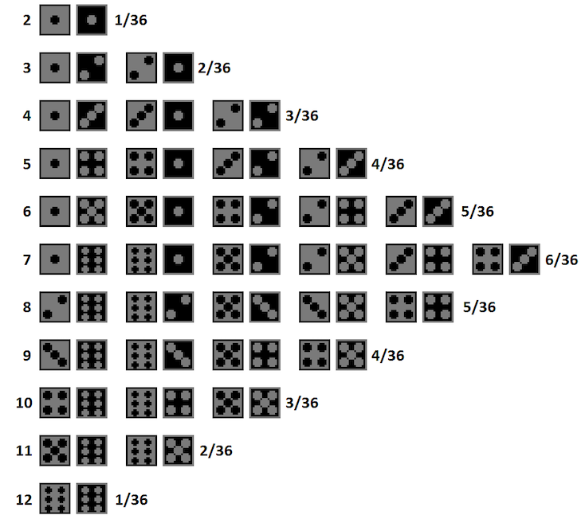
X.outcomes <- c(2:12)
X.prob <- c((1/36),(2/36),(3/36),(4/36),(5/36),(6/36),(5/36),(4/36),(3/36),(2/36),(1/36))
barplot(X.prob,ylim=c(0,0.20),names.arg=X.outcomes,space=0,xlab="x",ylab="Pr(X = x)", main = "probability distribution")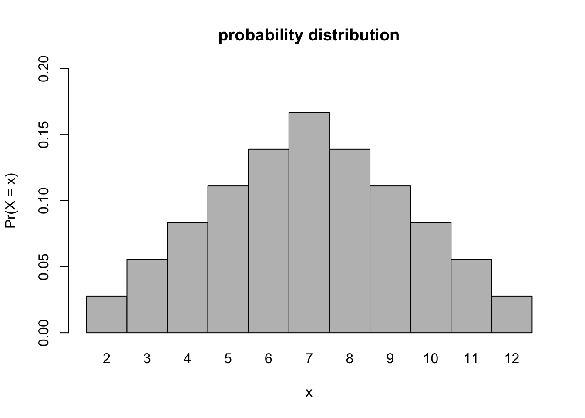
X.outcomes <- c(2:12)
X.prob <- c((1/36),(2/36),(3/36),(4/36),(5/36),(6/36),(5/36),(4/36),(3/36),(2/36),(1/36))
X.cumul <- cumsum(X.prob)
barplot(X.cumul,names.arg=X.outcomes,space=0,xlab="x",ylab="Pr(X <= x)", main = "cumulative probability distribution")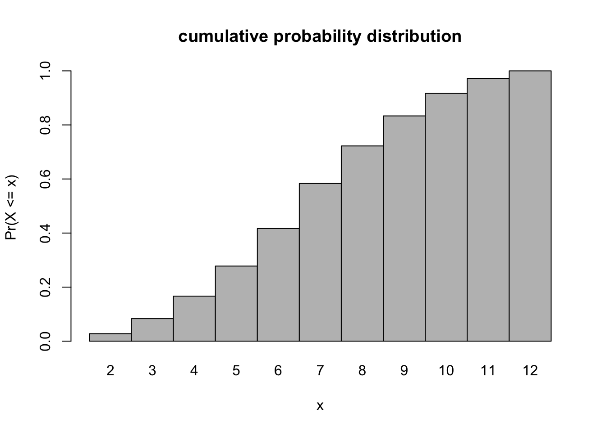
X.outcomes <- c(2:12)
X.prob <- c((1/36),(2/36),(3/36),(4/36),(5/36),(6/36),(5/36),(4/36),(3/36),(2/36),(1/36))
barplot(X.prob,ylim=c(0,0.20),names.arg=X.outcomes,space=0,xlab="x",ylab="Pr(X = x)", main = "probability distribution")
abline(v=c(0.5:10.5))PDF - Probability Density Function
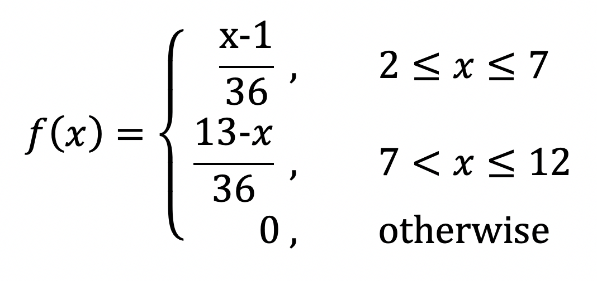
lower < 7 < upper
X >= 2 & X <= 7
(X[lower] - 1)/36
X > 7 & X <= 12
13 - X[upper])/36X.outcomes <- c(1,2,3,4,5,6,7,8,9,10,11,12,13)
lower <- X.outcomes >= 2 & X.outcomes <= 7
upper <- X.outcomes > 7 & X.outcomes <= 12
fx <- rep(0,length(X.outcomes))
fx[lower] <- (X.outcomes[lower] - 1)/36
fx[upper] <- (13 - X.outcomes[upper])/36
plot(X.outcomes,fx,type="l",ylab="f(x)", xlim = c(0,14), main = "probability density function")
abline(h=0,col="gray",lty=2)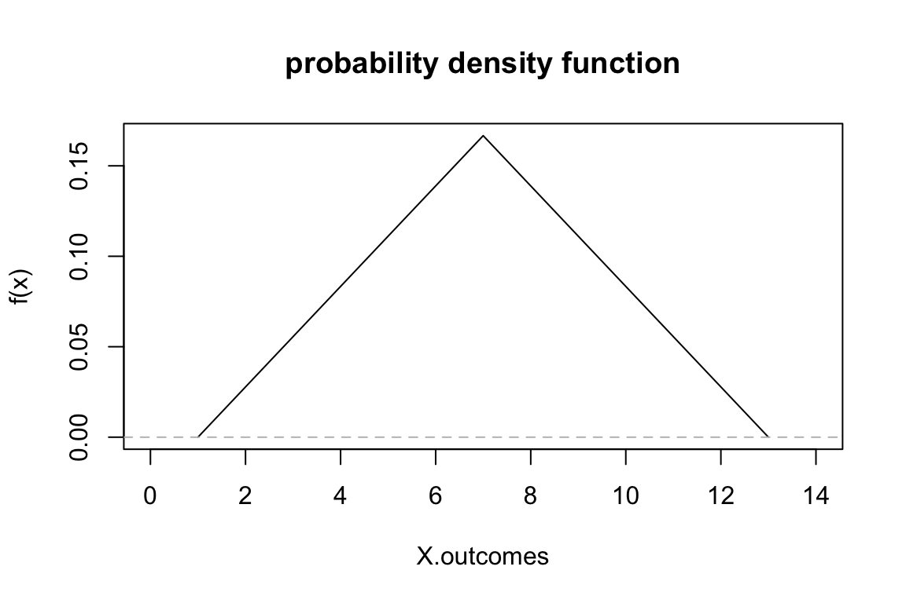
fx.specific <- (4.5-1)/36
fx.specific.area <- 3.5*fx.specific*0.5
fx.specific.vertices <- rbind(c(1,0),c(4.5,0),c(4.5,fx.specific))
plot(X.outcomes,fx,type="l",ylab="f(x)", xlim = c(0,14), main = "probability density function")
abline(h=0,col="gray",lty=2)
polygon(fx.specific.vertices,col="gray",border=NA)
abline(v=4.5,lty=3)
text(4,0.01,labels=fx.specific.area)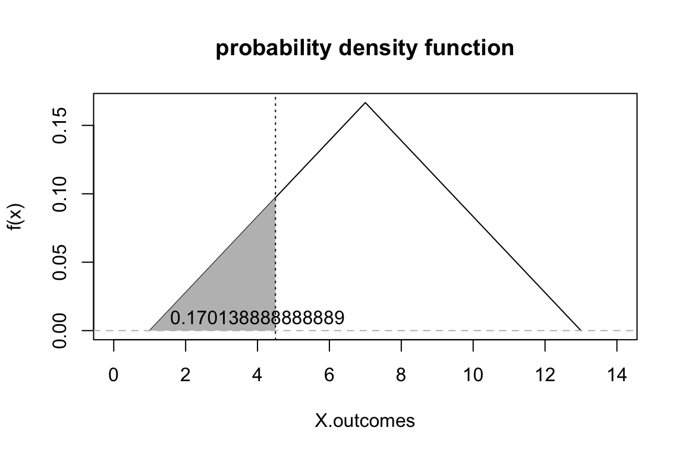
R - Probability - Shape
Symmetry : Draw a vertical line down the center, and it is equally reflected with 0.5 probability.
Skew : If a distribution is asymmetric, look at the “tail” of a distribution. Positive or right skew indicates a tail extending longer to the right of center.
Modality : Modality describes the number of easily identifiable peaks in the distribution of interest. Unimodal, bimodal, and trimodal…

station_data <- read.table("https://web.itu.edu.tr/~tokerem/18397_Cekmekoy_Omerli_15dk.txt", sep = ";", header = T)
table(station_data$temp)##
## 19.2 19.5 20.1 20.4 20.5 20.6 20.7 20.8 20.9 21 21.2 21.4 21.6 21.7 21.9
## 1 1 1 4 6 4 2 6 2 1 2 3 1 2 1
## 22.1 22.2 22.3 22.4 22.5 22.6 22.7 22.8 23 23.1 23.2 23.6 23.8 23.9 24.2
## 1 5 3 3 8 7 1 1 2 1 3 1 2 2 2
## 25.1 25.4 25.5 25.6 25.8 26.1 26.2 26.6 26.9 27.1 27.4 27.6 27.8 28 28.4
## 1 1 1 1 1 1 1 1 1 1 1 1 1 1 2
## 28.5 28.8 29 29.2 29.3 29.4 29.5 29.6 30 30.1 30.2 30.4 30.8 30.9 31
## 1 1 2 2 2 1 1 1 1 2 1 4 1 3 1
## 31.2 31.5
## 1 1df_temp_table <- data.frame(table(station_data$temp))
df_temp_table## Var1 Freq
## 1 19.2 1
## 2 19.5 1
## 3 20.1 1
## 4 20.4 4
## 5 20.5 6
## 6 20.6 4
## 7 20.7 2
## 8 20.8 6
## 9 20.9 2
## 10 21 1
## 11 21.2 2
## 12 21.4 3
## 13 21.6 1
## 14 21.7 2
## 15 21.9 1
## 16 22.1 1
## 17 22.2 5
## 18 22.3 3
## 19 22.4 3
## 20 22.5 8
## 21 22.6 7
## 22 22.7 1
## 23 22.8 1
## 24 23 2
## 25 23.1 1
## 26 23.2 3
## 27 23.6 1
## 28 23.8 2
## 29 23.9 2
## 30 24.2 2
## 31 25.1 1
## 32 25.4 1
## 33 25.5 1
## 34 25.6 1
## 35 25.8 1
## 36 26.1 1
## 37 26.2 1
## 38 26.6 1
## 39 26.9 1
## 40 27.1 1
## 41 27.4 1
## 42 27.6 1
## 43 27.8 1
## 44 28 1
## 45 28.4 2
## 46 28.5 1
## 47 28.8 1
## 48 29 2
## 49 29.2 2
## 50 29.3 2
## 51 29.4 1
## 52 29.5 1
## 53 29.6 1
## 54 30 1
## 55 30.1 2
## 56 30.2 1
## 57 30.4 4
## 58 30.8 1
## 59 30.9 3
## 60 31 1
## 61 31.2 1
## 62 31.5 1barplot(df_temp_table$Freq/121,names.arg=df_temp_table$Var1)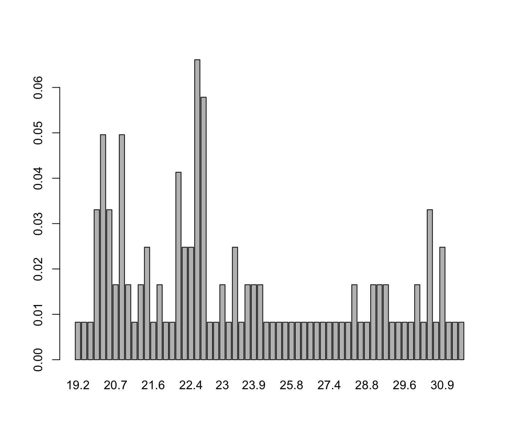
R - Common Probability Mass Functions
For discrete random variables
- Bernoulli Distribution : has only two possible outcomes, such as success or failure.


Bernoulli Distribution
x<-1
p <- 0.6
b_fx <- p^x*((1-p)^(1-x))
barplot(c(1-p,p),names.arg=c(0,1))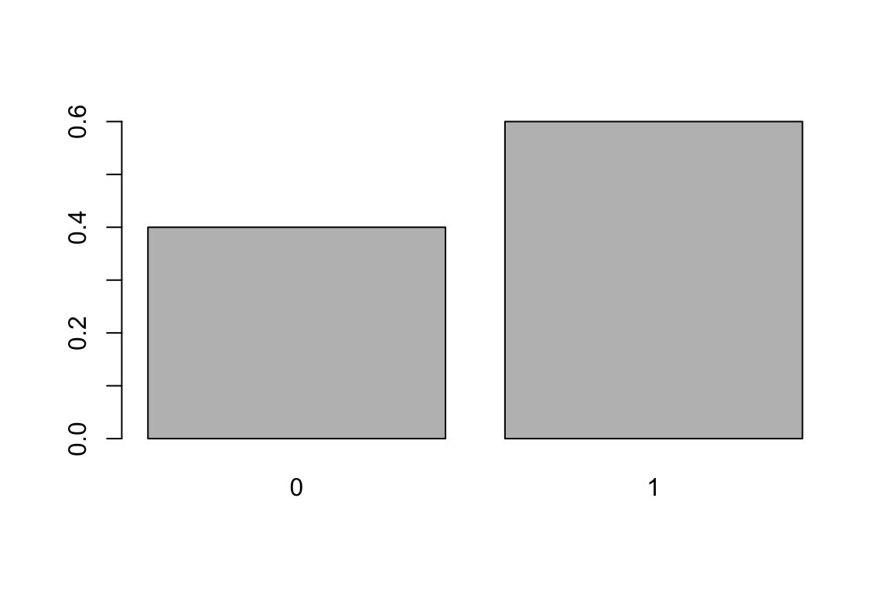
R - Common Probability Mass Functions
For discrete random variables
- Binomial Distribution : The binomial distribution is the distribution of successes in n number of trials involving binary discrete random variables.
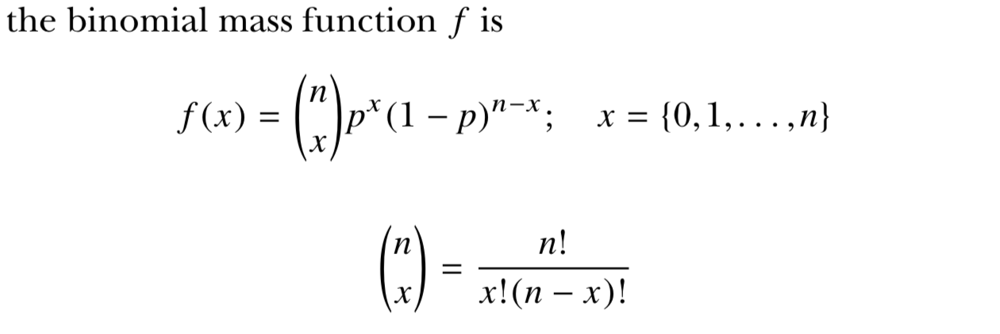
Binomial Distribution
There are four functions associated with Binomial distributions.
- dbinom(x, size, prob)
- pbinom(x, size, prob)
- qbinom(p, size, prob)
- rbinom(n, size, prob)
- x is a vector of numbers.
- p is a vector of probabilities.
- n is number of observations.
- size is the number of trials.
- prob is the probability of success of each trial.
Binomial Distribution - dbinom
It is a density or distribution function.
x <- 1
size <- 8
prob <- 1/2
dbinom(x , size , prob)## [1] 0.03125x <- 4
dbinom(x , size , prob)## [1] 0.2734375x <- 0:8
dbinom(x , size , prob)## [1] 0.00390625 0.03125000 0.10937500 0.21875000 0.27343750 0.21875000
## [7] 0.10937500 0.03125000 0.00390625bin <- dbinom(x = 0:8 , size = 8 , prob = 0.5)
plot(x=0:8, y = bin)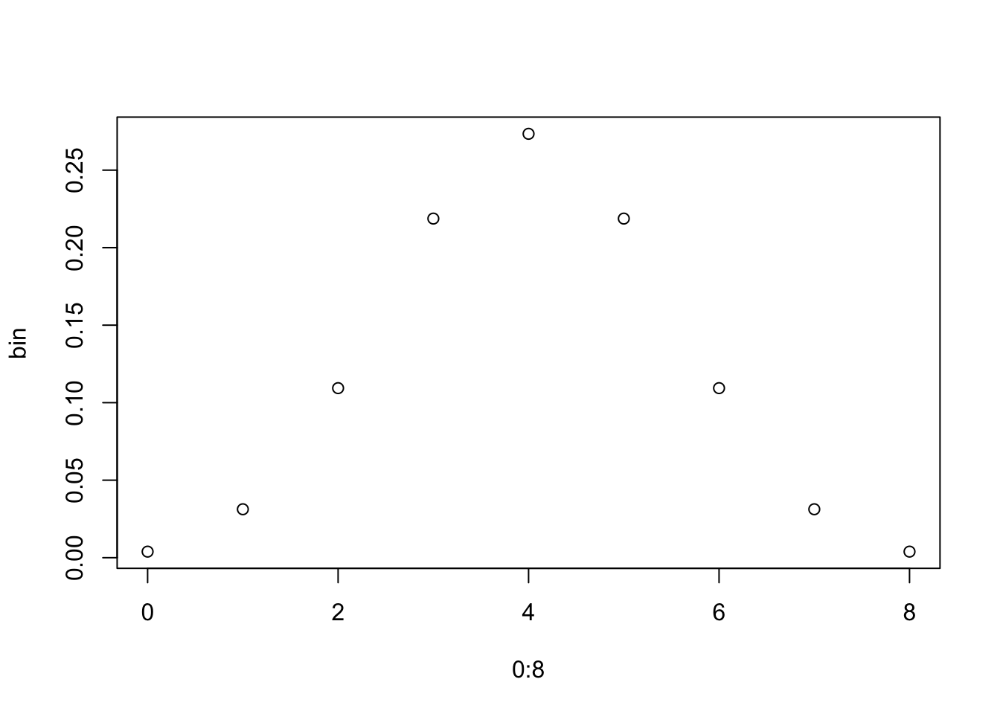
X.outcomes <- c(1:13)
X.prob <- c((0/36),(1/36),(2/36),(3/36),(4/36),(5/36),(6/36),(5/36),(4/36),(3/36),(2/36),(1/36),(0/36))
barplot(X.prob,ylim=c(0,0.20),names.arg=X.outcomes,space=0,xlab="x",ylab="Pr(X = x)", main = "probability distribution")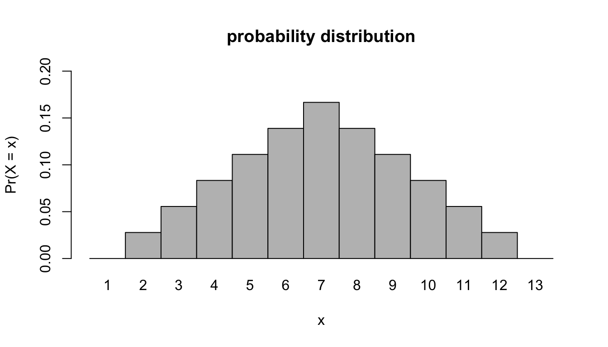
X.outcomes <- c(1:13)
X.prob <- c((0/36),(1/36),(2/36),(3/36),(4/36),(5/36),(6/36),(5/36),(4/36),(3/36),(2/36),(1/36),(0/36))
barplot(X.prob,ylim=c(0,0.20),names.arg=X.outcomes,space=0,xlab="x",ylab="Pr(X = x)", main = "probability distribution")
lines(dbinom(x = 0:12, size = 36, prob = 1/6), col= "red")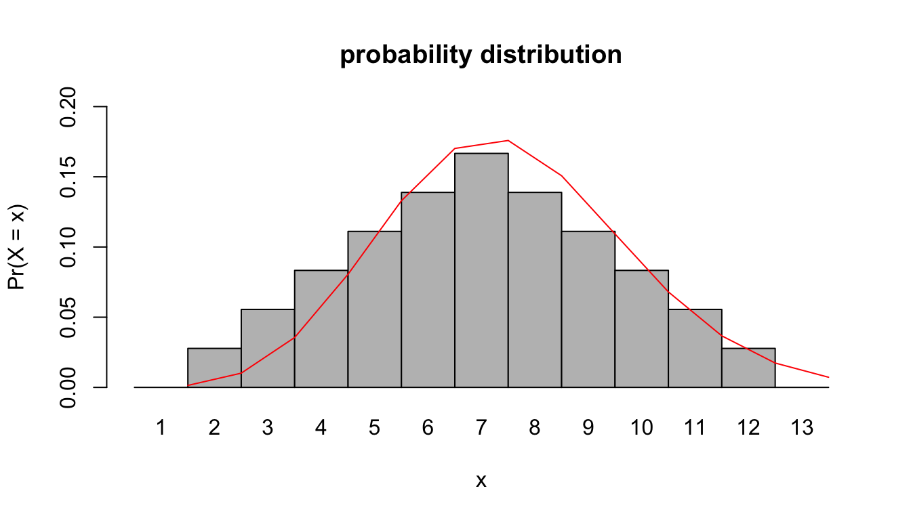
R - Common Probability Mass Functions
- Poisson Distribution : important and rarely seen event.
λp should be interpreted as the “mean number of occurrences”
Poisson Distribution
There are three functions associated with Binomial distributions.
- dpois(x, lambda)
- ppois(q, lambda, lower.tail)
- qpois(p, lambda, lower.tail)
- rpois(n, lambda)
- x : successes in a period
- λ : the expected number of events
- lower.tail = TRUE for left tail
- q vector of quantiles
- n number of random values to return
- p vector of probabilities
plot(dpois(0:10,2.22),type = "o", col="red")
lines(dpois(0:10,4.22), type = "o", col = "blue")
lines(dpois(0:10,7.22), type = "o", col = "green")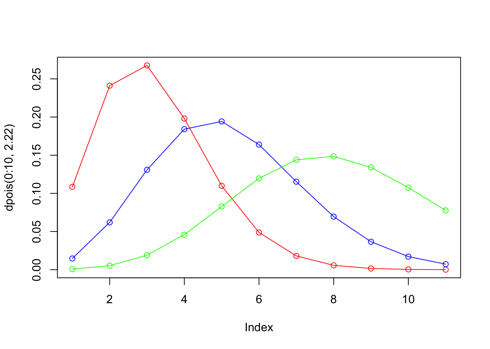
R - Common Probability Density Functions
- Uniform
- Normal
- Student’s t-distribution
- Exponential
- (gamma, beta, log-normal)Uniform
The uniform distribution is a simple density function that describes a continuous random variable whose interval of possible values offers no fluctuations in probability.
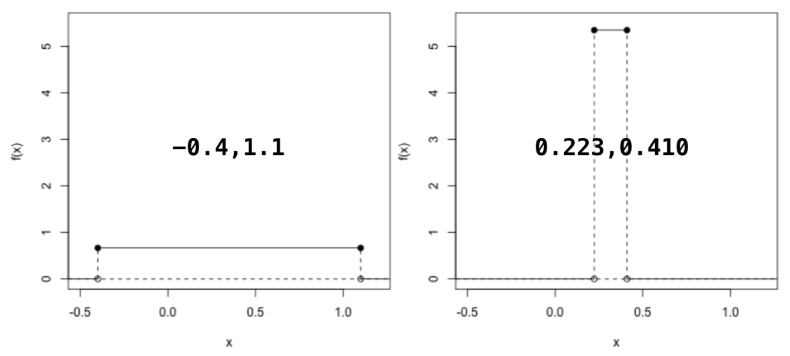

- runif()
- dunif()
- punif()
- qunif()
runif(n = 10,-0.4,1.1)## [1] 0.79444846 1.02590575 0.86172771 0.09510426 0.44119597 0.67788550
## [7] 0.84364748 0.79979042 0.69982195 0.23687271r1 <- runif(n = 10,-0.4,1.1)
table(r1)## r1
## -0.36305262320675 -0.26417560337577 0.0494614048162475
## 1 1 1
## 0.0828472837107256 0.110665947571397 0.464143047132529
## 1 1 1
## 0.570710018184036 0.623240687791258 0.693286393210292
## 1 1 1
## 0.888681203383021
## 1t1 <- table(r1)barplot(t1)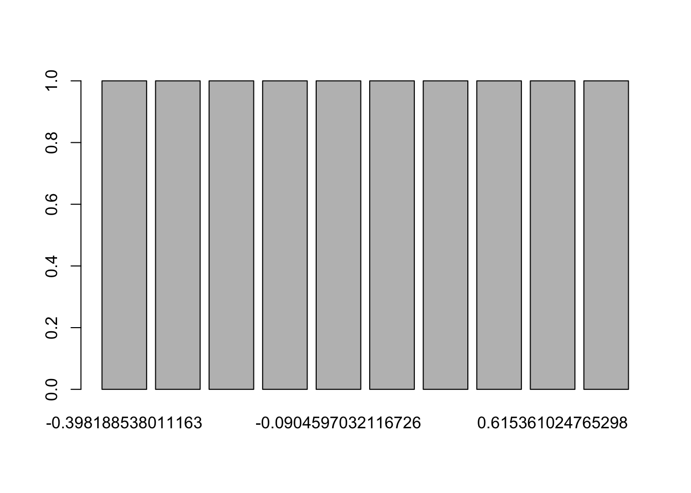
barplot(table(runif(n = 100,-0.4,1.1)))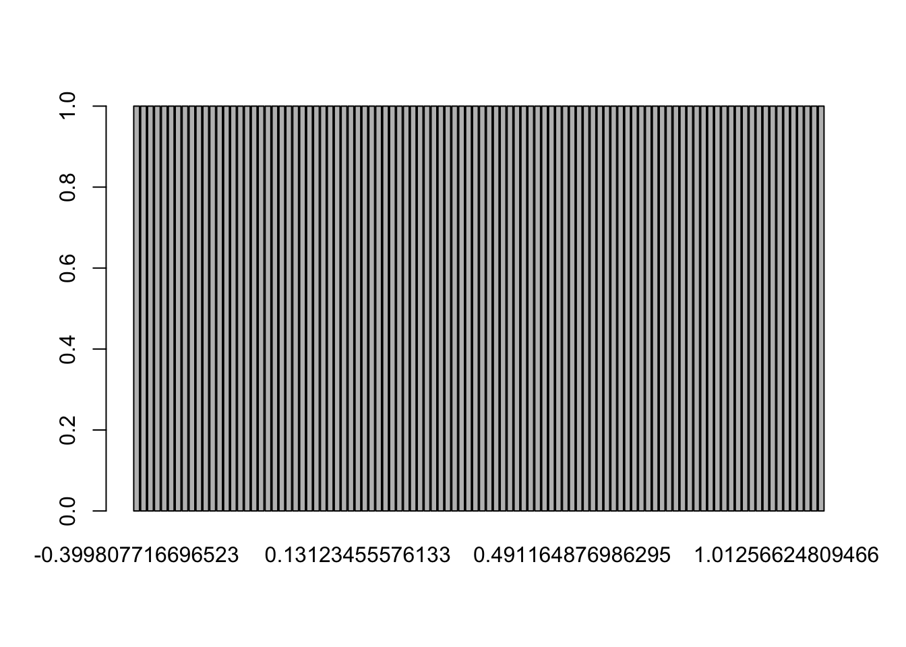
barplot(table(runif(n = 1000,-0.4,1.1)))dunif(x=c(-2,-0.33,0,0.5,1.05,1.2),min=-0.4,max=1.1)## [1] 0.0000000 0.6666667 0.6666667 0.6666667 0.6666667 0.0000000d1 <- dunif(x=c(-2,-0.33,0,0.5,1.05,1.2),min=-0.4,max=1.1)
barplot(d1,names.arg=c(-2,-0.33,0,0.5,1.05,1.2))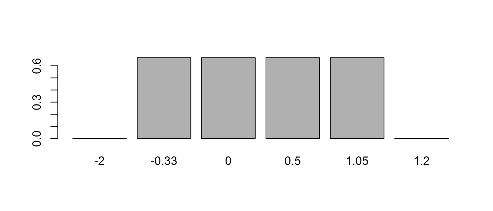
d2 <- dunif(x=c(-2,runif(998,-0.4,1.1),1.2),min=-0.4,max=1.1)
barplot(d2)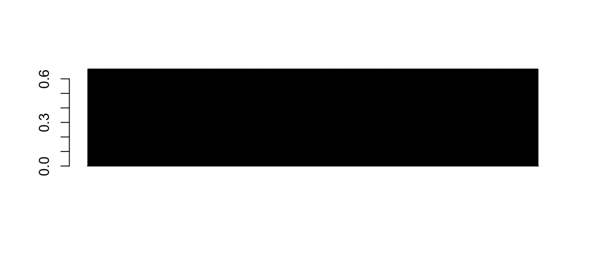
Characterized by a distinctive “bell-shaped” curve, it’s also referred to as the Gaussian distribution.


Normal
Standart Normal
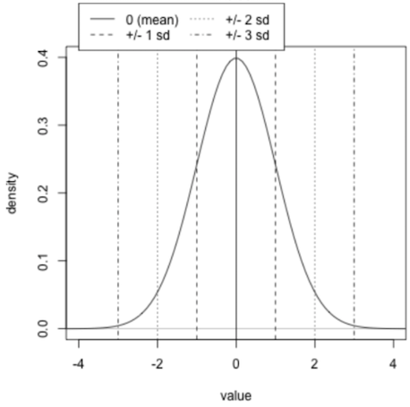
0.95 −2σ to +2σ and 0.99 −3σ tp +3σ
- rnorm()
- dnorm()
- pnorm()
r1 <- rnorm(50,mean = 0, sd = 1)
r1## [1] 0.13632190 -1.54564285 -0.29006986 0.07952042 0.10216162
## [6] -2.05870119 -0.59826475 -0.81835796 0.09311720 -0.10523874
## [11] -0.42240931 1.00239467 0.02975819 -0.72228847 1.05584386
## [16] 0.37004927 0.50369814 -0.63587461 -1.07130725 2.08104961
## [21] -0.55457406 1.36120562 -1.39482761 0.21882743 0.40509180
## [26] 0.97558666 0.74809313 -1.87559434 -0.40726308 -0.27589373
## [31] -0.95674285 -0.94650634 -1.11955645 0.10351829 -1.69709854
## [36] -0.92635797 0.98181390 0.39517809 -0.53823774 0.09731913
## [41] 0.35966470 1.75251617 -0.17211293 -0.27188822 0.28826485
## [46] -1.52356972 -0.68334020 -2.35424650 0.88283695 -0.88650757plot(r1)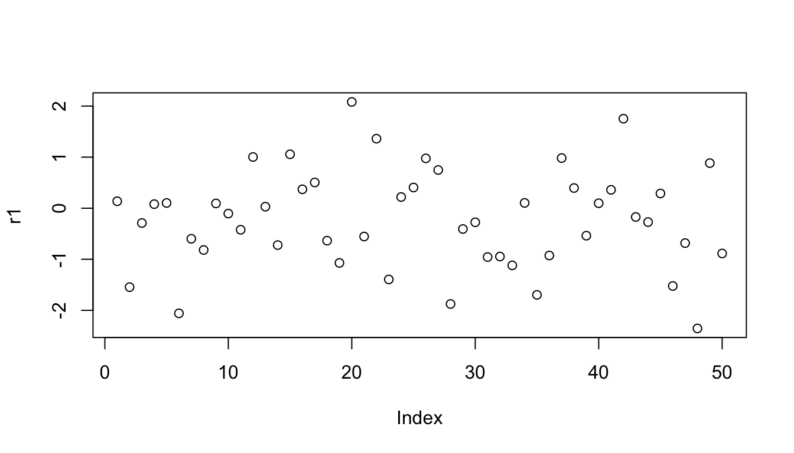
hist(r1)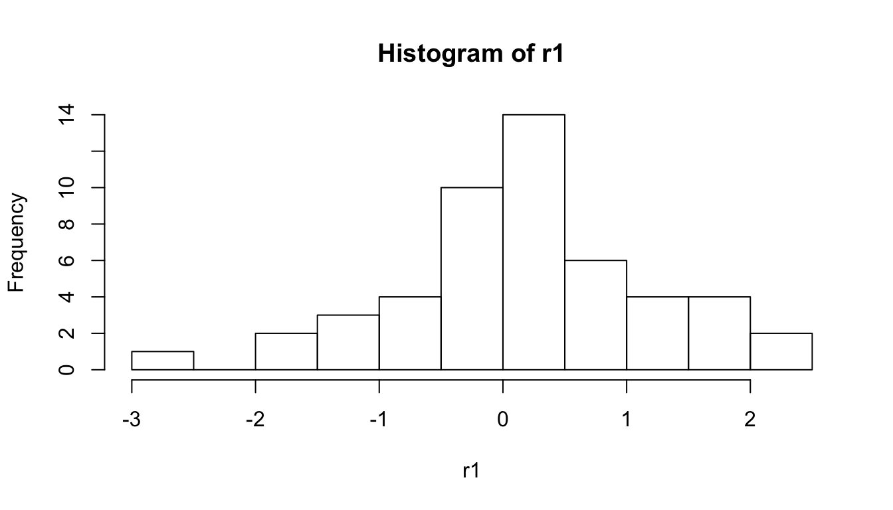
barplot(r1)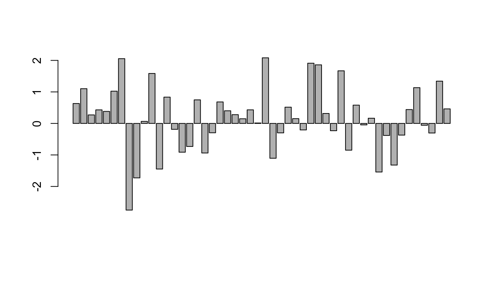
barplot(table(r1))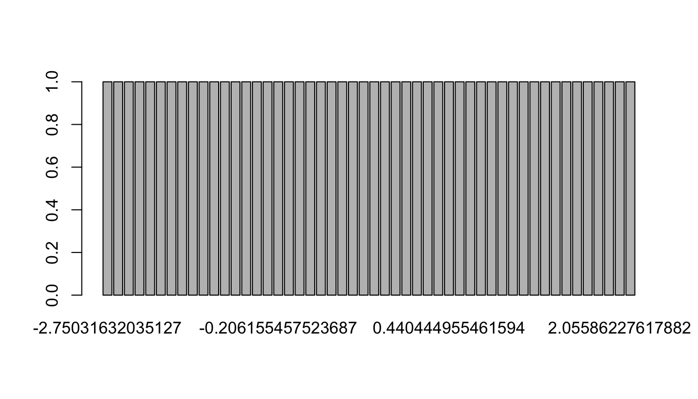
dnorm(r1, mean = 0, sd = 1)## [1] 0.39525255 0.12082109 0.38250682 0.39768292 0.39686582 0.04792760
## [7] 0.33357122 0.28542003 0.39721645 0.39673920 0.36489219 0.24139129
## [13] 0.39876568 0.30734363 0.22847199 0.37254153 0.35141253 0.32591887
## [19] 0.22474516 0.04576104 0.34207861 0.15796546 0.15081361 0.38950396
## [25] 0.36751608 0.24787686 0.30156787 0.06870965 0.36719210 0.38404436
## [31] 0.25243109 0.25490212 0.21317500 0.39681046 0.09451372 0.25975716
## [37] 0.24637074 0.36897684 0.34514576 0.39705755 0.37395572 0.08589798
## [43] 0.39307692 0.38446592 0.38270652 0.12498383 0.31587287 0.02496759
## [49] 0.27018751 0.26931156fx3 <- dnorm(r1)plot(r1,fx3)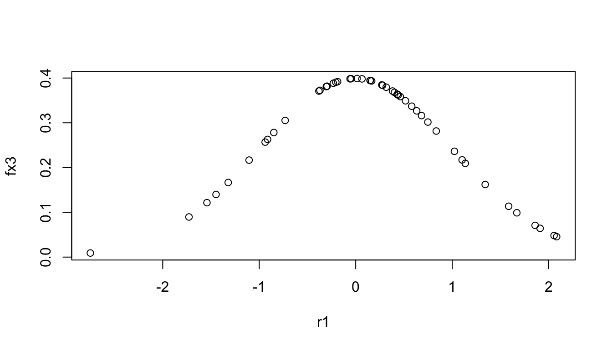
Practice : Write A Function for outliers
outliers
foo <- c(0.6,-0.6,0.1,-0.2,-1.0,0.4,0.3,-1.8,1.1,6.0)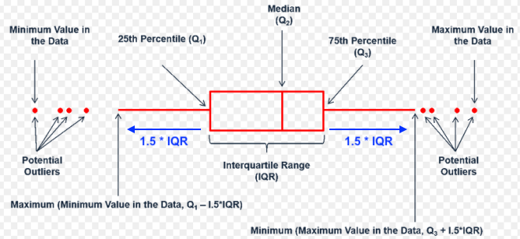
summary(foo)## Min. 1st Qu. Median Mean 3rd Qu. Max.
## -1.80 -0.50 0.20 0.49 0.55 6.00plot(foo,rep(0,10),yaxt="n",ylab="",bty="n",cex=2,cex.axis=1.5,cex.lab=1.5)
abline(h=0,col="gray",lty=2)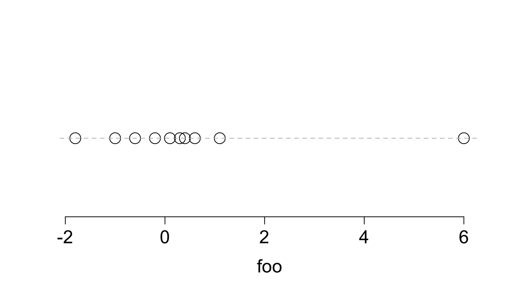
plot(foo,rep(0,10),yaxt="n",ylab="",bty="n",cex=2,cex.axis=1.5,cex.lab=1.5)
abline(h=0,col="gray",lty=2)
arrows(5,0.5,5.9,0.1,lwd=2)
text(5,0.7,labels="outlier?",cex=3)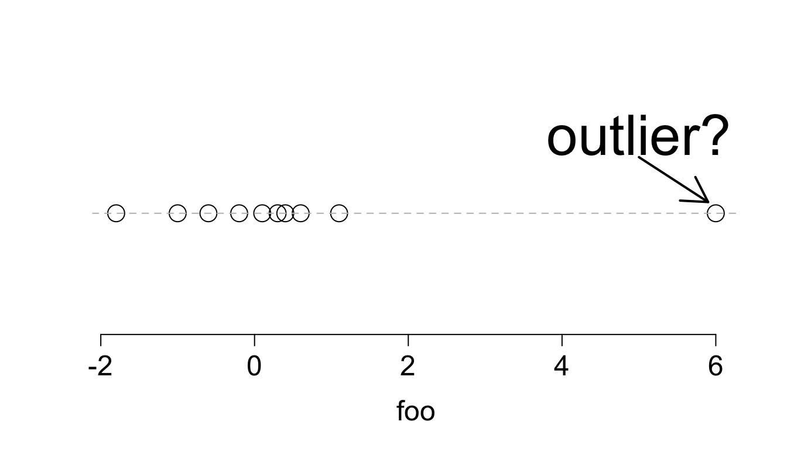
boxplot()
boxplot(foo)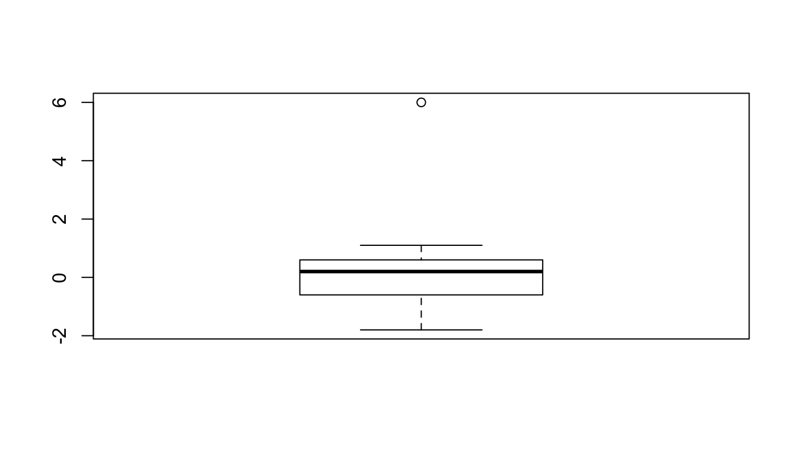
mean(foo)## [1] 0.49mean(foo[-10])## [1] -0.1222222Function
baz <- c(-0.3,0.9,2.8,2.3,1.2,12,-4.1,-0.4,4.1,-2.3)- Mean, Median, Range
- Variance, Standart Deviation
- Plot, hist
- Barplot with table() function
- summary() function
- boxplot
- if there is outliers, print
Condition for outliers is
OUTLIERS < MEAN-(3*IQR)
or
OUTLIERS > MEAN+(3*IQR)
baz <- c(-0.3,0.9,2.8,2.3,1.2,12,-4.1,-0.4,4.1,-2.3,1.2)
statistic_function <- function(baz) {
}statistic_function <- function(baz) {
print(c(mean(baz),"mean"))
print(c(median(baz),"median"))
print(c(range(baz),"range"))
}
statistic_function(baz)## [1] "1.58181818181818" "mean"
## [1] "1.2" "median"
## [1] "-4.1" "12" "range"statistic_function <- function(baz) {
print(c(mean(baz),"mean"))
print(c(median(baz),"median"))
print(c(range(baz),"range"))
print(c(var(baz),"var"))
print(c(sd(baz),"sd"))
}
statistic_function(baz)## [1] "1.58181818181818" "mean"
## [1] "1.2" "median"
## [1] "-4.1" "12" "range"
## [1] "17.2456363636364" "var"
## [1] "4.15278657814682" "sd"statistic_function <- function(baz) {
print(c(mean(baz),"mean"))
print(c(median(baz),"median"))
print(c(range(baz),"range"))
print(c(var(baz),"var"))
print(c(sd(baz),"sd"))
plot(baz)
hist(baz)
}
statistic_function(baz)## [1] "1.58181818181818" "mean"
## [1] "1.2" "median"
## [1] "-4.1" "12" "range"
## [1] "17.2456363636364" "var"
## [1] "4.15278657814682" "sd"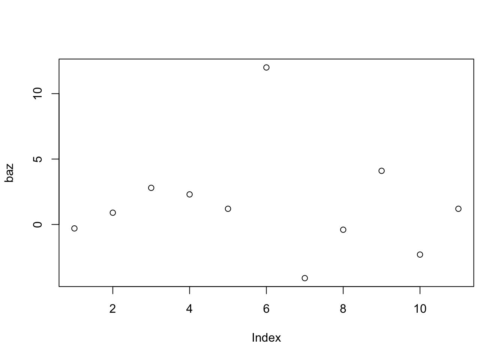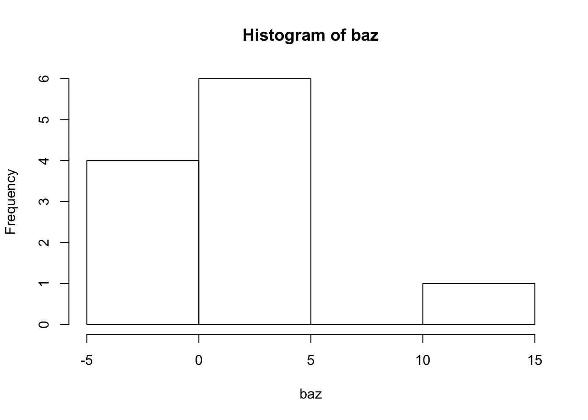
statistic_function <- function(baz) {
print(c(mean(baz),"mean"))
print(c(median(baz),"median"))
print(c(range(baz),"range"))
print(c(var(baz),"var"))
print(c(sd(baz),"sd"))
plot(baz)
hist(baz)
barplot(table(baz))
print(c(summary(baz),"summary"))
boxplot(baz)
}
statistic_function(baz)## [1] "1.58181818181818" "mean"
## [1] "1.2" "median"
## [1] "-4.1" "12" "range"
## [1] "17.2456363636364" "var"
## [1] "4.15278657814682" "sd"


## Min. 1st Qu. Median
## "-4.1" "-0.35" "1.2"
## Mean 3rd Qu. Max.
## "1.58181818181818" "2.55" "12"
##
## "summary"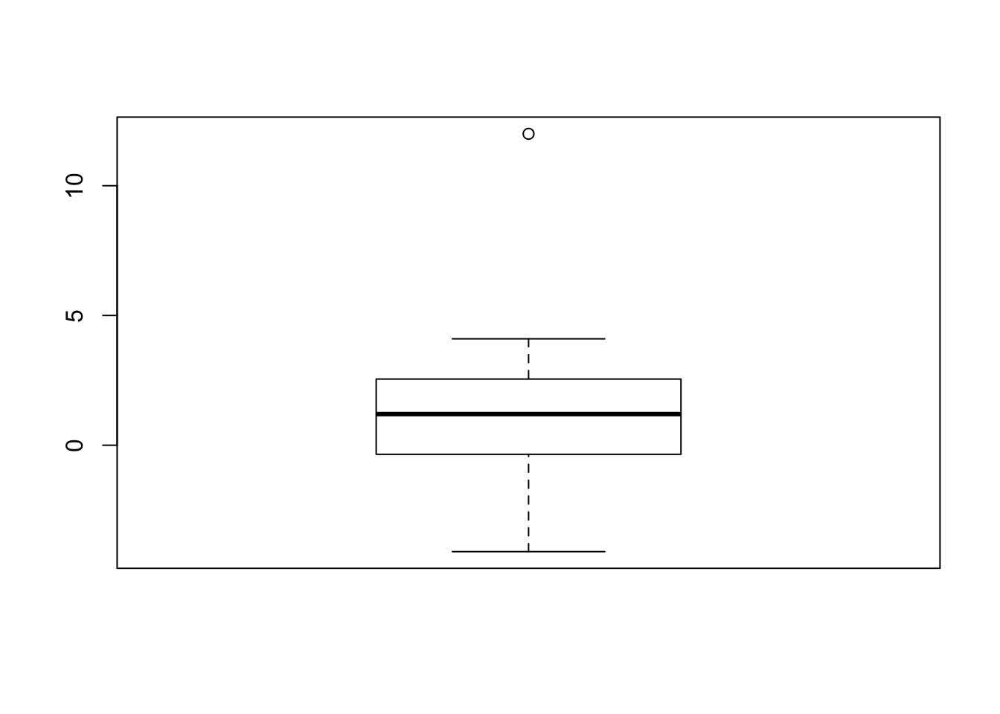
statistic_function <- function(baz) {
print(c(mean(baz),"mean"))
print(c(median(baz),"median"))
print(c(range(baz),"range"))
print(c(var(baz),"var"))
print(c(sd(baz),"sd"))
plot(baz)
hist(baz)
barplot(table(baz))
print(c(summary(baz),"summary"))
boxplot(baz)
for (i in 1:length(baz)) {
if (baz[i]<mean(baz)-3*IQR(baz) | baz[i]>mean(baz)+3*IQR(baz)) {
print("there is outliers")
print(c(baz[i] , "outlier") )
print(which(baz==baz[i]))
}
}
}
statistic_function(baz)## [1] "1.58181818181818" "mean"
## [1] "1.2" "median"
## [1] "-4.1" "12" "range"
## [1] "17.2456363636364" "var"
## [1] "4.15278657814682" "sd"
 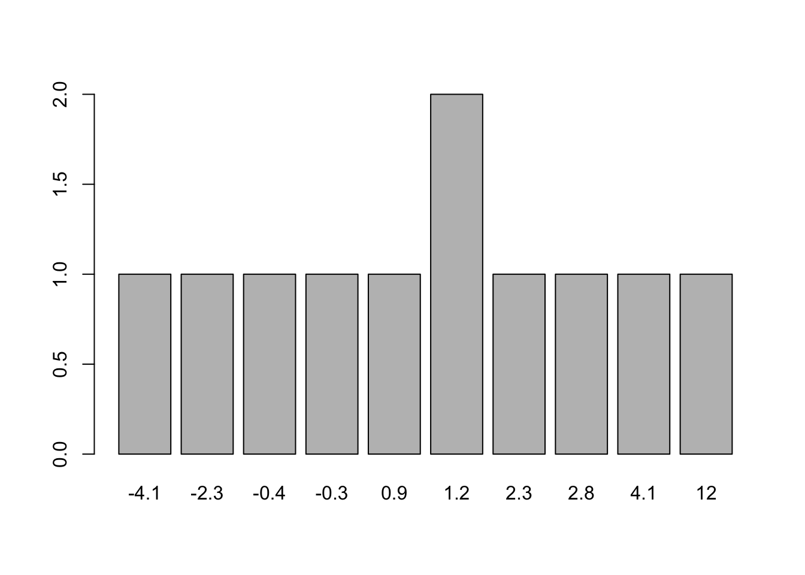
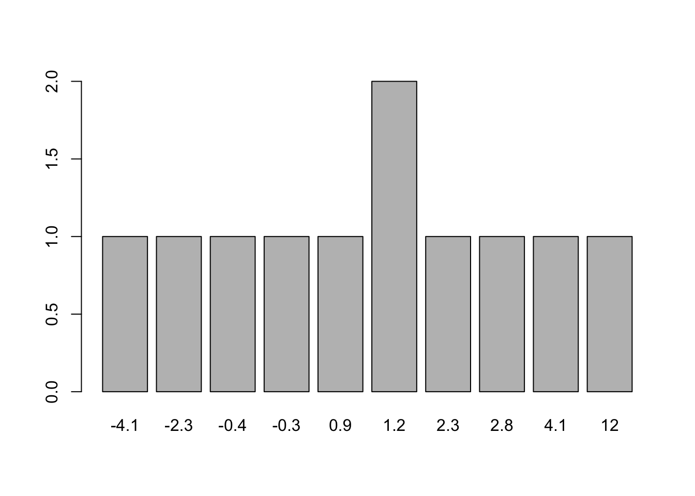
## Min. 1st Qu. Median
## "-4.1" "-0.35" "1.2"
## Mean 3rd Qu. Max.
## "1.58181818181818" "2.55" "12"
##
## "summary"
## [1] "there is outliers"
## [1] "12" "outlier"
## [1] 6